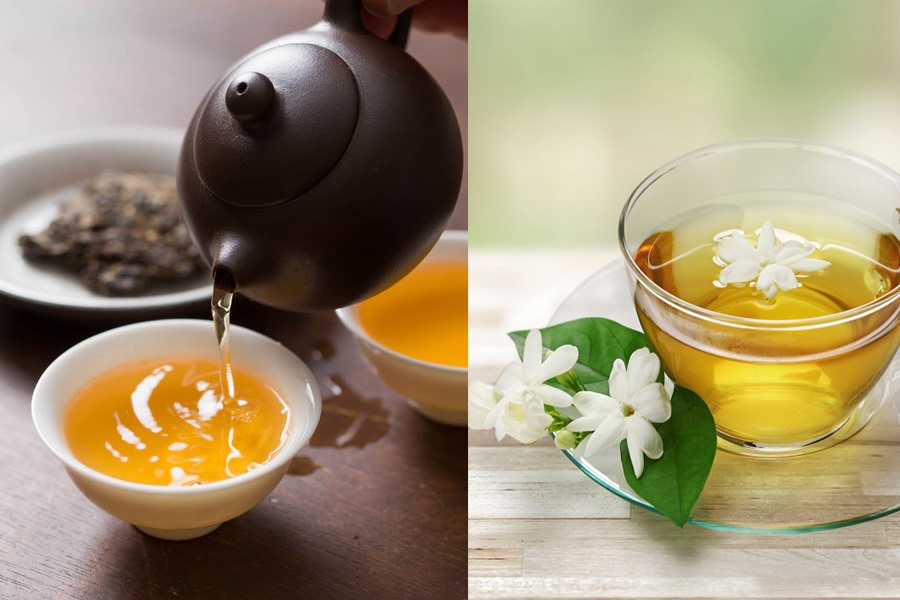

Lợi ích sức khỏe từ trà
Khảo sát những người có tuổi thọ trên 100 tuổi ở Nhật Bản cho thấy 80% có thói quen uống trà và 40% trong số đó thừa nhận mình nghiện trà. Hãy cùng tìm hiểu những lợi ích sức khỏe tuyệt vời mà trà mạng lại.
Một số công dụng hữu ích của trà gồm:
Khả năng chống oxy hóa
Các thử nghiệm chống oxy hóa đã xác nhận rằng một tách trà 300ml có chức năng chống oxy hóa tương đương một chai rưỡi rượu vang đỏ, tương đương 12 chai rượu vang trắng, 12 ly bia, 4 quả táo, 5 củ hành tây, tương đương 7 cốc nước cam tươi.
Chất chống oxy hóa có tác dụng bảo vệ hoặc làm chậm tổn thương tế bào gây ra bởi các gốc tự do, giúp cân bằng môi trường tế bào, làm hạn chế nguy cơ xảy ra các vấn đề sức khỏe, trong đó có bệnh tiểu đường, tim mạch và ung thư.
Chống lão hóa
Theo kết quả kiểm nghiệm của các nhà nghiên cứu khoa học Nhật Bản, tác dụng chống lão hóa của Polyphenol trong trà mạnh gấp 18 lần so với vitamin E. Trà không chỉ kéo dài tuổi thọ mà còn làm chậm quá trình lão hóa.
Cải thiện khả năng miễn dịch
Các nghiên cứu về khả năng miễn dịch trên chuột của Viện nghiên cứu trà thuộc Viện khoa học nông nghiệp Trung Quốc đã cho thấy, các dấu hiệu sinh tồn của nhóm chuột được cho ăn bằng trà hoặc được tiêm chất chiết xuất từ trà sẽ tốt hơn đáng kể so với những con chuột được cho ăn thông thường.
Cải thiện tâm trạng
Khi uống trà, bạn lâng lâng như đang yêu. Axit amin trong trà sẽ thúc đẩy một lượng lớn dopamin tiết ra, đây chính là thứ tạo ra cảm xúc như đang yêu.
Giảm hậu quả từ phóng xạ hạt nhân, ung thư
Tháng 8/1945, vụ đánh bom nguyên tử ở Hiroshima ở Nhật Bản đã giết chết hơn 100.000 người, hàng trăm ngàn người bị nhiễm phóng xạ. Sau vài năm, hầu hết nhóm nhiễm phóng xạ hạt nhân đều mắc bệnh bạch cầu hoặc nhiều loại ung thư khác, lần lượt qua đời. Tuy nhiên, nghiên cứu cho thấy có một nhóm là những người thường uống chè đã sống sót. Hiện tượng này được gọi là "Hiện tượng Hiroshima".
Số liệu từ Cục thống kê Nhật Bản đã chỉ ra, nhóm nạn nhân của vụ ném bom có tỷ lệ mắc ung thư thấp nhất chính là những người nông dân trồng chè và người hay uống nước chè.
Giảm khả năng mắc bệnh Parkinson
Các nhà nghiên cứu từ Đại học quốc gia Singapore đã tiến hành một cuộc khảo sát trên 63.000 người Singapore gốc Hoa tuổi từ 45-75 trong 12 năm. Nhóm nghiên cứu phát hiện những người trung niên và cao tuổi thường xuyên uống trà đen có nguy cơ mắc bệnh Parkinson thấp hơn 71%.
Giảm nguy cơ mắc bệnh tim mạch
Các nghiên cứu dịch tễ học được thực hiện tại Nhật Bản đã chỉ ra, uống 10 tách trà nhỏ mỗi ngày có thể làm giảm 42% chỉ số nguy cơ mắc bệnh tim mạch ở nam giới, so với những người uống ít hơn 3 tách trà mỗi ngày. Ở nữ, con số này là 18%.
Giảm nguy cơ đục thủy tinh thể
Nghiên cứu của Nhật Bản cho thấy, trong số bệnh nhân đục thủy tinh thể, 28,6% có thói quen uống trà, 71,4% không có thói quen uống trà.
Giảm nguy cơ tiểu đường
Các nhà nghiên cứu tại Đại học y dược Toyama, Nhật Bản phát hiện ra nhóm 1.300 bệnh nhân tiểu đường uống trà pha trong nước sôi để nguội trong nửa năm 82% các triệu chứng tiểu đường thuyên giảm đáng kể.
Tiêu diệt vi khuẩn E.coli
Nhóm nghiên cứu của Đại học Showa, Nhật Bản đã cho 10.000 Escherichia coli 0-157 có độc tính cao vào 1 ml dung dịch trà polyphenol pha loãng bằng 1/20 trà thông thường. Sau 5 giờ, tất cả vi khuẩn đều chết. Điều này cho thấy tinh chất trà giúp diệt virus hiệu quả, từ đó giúp bảo vệ hệ tiêu hóa.
Uống 8-10 gam trà mỗi ngày trong vòng 12 tuần, lượng mỡ mất đi khoảng hơn 1 kg. Tuy nhiên, điều này còn liên quan mật thiết đến chế độ ăn uống.
Tin tức liên quan


Bình luận

Wow, thật không ngờ một thức uống quen thuộc như trà lại có nhiều lợi ích sức khỏe đến vậy! Đặc biệt ấn tượng với khả năng chống
oxy hóa tương đương nhiều loại thực phẩm khác.
Bài viết này đã thay đổi hoàn toàn quan điểm của mình về trà, không chỉ là thức uống giải khát mà còn là một 'liều thuốc' tự nhiên tuyệt vời.
Mình rất quan tâm đến việc chống lão hóa, và thông tin polyphenol trong trà mạnh hơn vitamin E đến 18 lần thật sự đáng chú ý